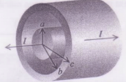
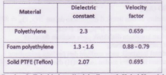
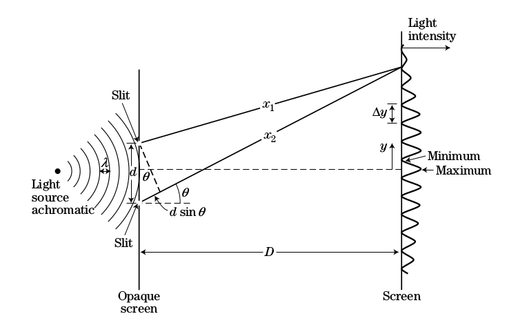
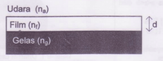

#Soal 1.
Kabel koaxial beserta dimensi dari konstruksi kabel diberikan pada Gambar 1. Pada kondisi daerah dimana $a<r<b$ diisi udara, maka
kapasitansi persatuan panjang : $2\pi\epsilon_0[\frac{1}{ln(b/a)}] \frac{F}{m}$
induktansi persatuan panjang : $(\frac{\mu_o}{2\pi})ln(b/a)\frac{H}{m}$

Gambar 1

Gambar 2
- Tentukan impedansi karakteristik dan kecepatan rambat gelombang dalam kondisi $a<r<b$ diisi udara
- Secara komersial, hampir tidak ada kabel koaxial tanpa menggunakan bahan dielektrik pada daerah $a<r<b$. Jika diisi dengan bahan material Polyethylene (lihat Gambar 2), diinginkan besar impedansi karakteristik adalah $50\ \Omega$. Tentukan perbandingan antara dimensi b/a dari kabel coaxial tersebut.
#Soal 2.
Eksperimen fenomena gelombang menggunakan sumber cahaya monochromatic. Eksperimen tersebut dikenalkan oleh Young.

Gambar 3
- Fenomena gelombang apa yang ingin dijelaskan dalam eksperimen tersebut.
Jika sumber melalui dua celah yang berjarak d, dan persamaan gelombang pada kedua celah dinyatakan dengan:
\(E_1(x,t) = E_0 sin(kx_1-\omega t)\) \(E_2(x,t) = E_0 sin(kx_2 - \omega t)\)
Hasil superposisi dari kedua gelombang tersebut dapat memberikan beda fasa sebesar: $\phi = \frac{2\pi}{\lambda}(x_2-x_1)$
- Nyatakan beda fasa dalam sudut $\theta$ dan jarak antar dua celah serta jelaskan syarat dari beda fasa $\theta$ agar terjadi intensitas maksimum dan intensitas minimum pada layar [catatan : intensitas pada layar ($I_0cos^2(\frac{\phi}{2}))$]
- Jika intensitas (I) pada screen dapat dinyatakan sebagai fungsi $I(\theta) = I_0 cos^2(\frac{\phi}{2})$, dan jarak $D>>>d$ sehingga sudut $\theta$ dianggap kecil, nyatakan $I(\theta)$ sebagai fungsi dari $I(y)$ dimana y adalah jarak dari terang maksimum ke maksimum berikutnya.
- Jika diberikan parameter percobaan adalah d=0.1 mm, D = 50 cm dan jarak terdekat yang teramati antara terang maksimum ($\Delta y$) adalah 2.5 mm, tentukan panjang gelombang ($\lambda$) dari sumber
#Soal 3.
Suatu lensa terbuat dari gelas dengan permitivitas $2.2 \epsilon_0$ (lihat Gambar 3). Untuk mencegah refleksi pada cahaya merah ($\lambda=680 nm$), diaplikasikan coating film pada lensa.

Gambar 3
- Tentukan tebal minimum dari coating film(d)
- Tentukan permitivitas relatif dari coating film untuk meminimumkan refleksi dari cahaya merah yang datang
- Tentukan persentase intensitas dari cahaya merah yang direfleksikan antara medium udara dan coating film
#Soal 4.
Gelombang intensitas medan listrik E dinyatakan dalam $\vec{E}_y(x,t) = 377cos(5x-10^9 t)\vec{a}_y \ \ \frac{V}{m}$ merambat pada medium dielektrik $\mu=\mu_0$ dan $\epsilon=\epsilon_r\epsilon_0$
- Tentukan konstanta dielektrik pada medium dielektrik
- Cepat rambat Gelombang
- Impedansi intrinsik pada medium dan panjang gelombang
- Persamaan intensitas medan magnet (H) dan Vector Poynting (S) dari gelombang elektromagnetik tersebut (solusi dalam vektor)